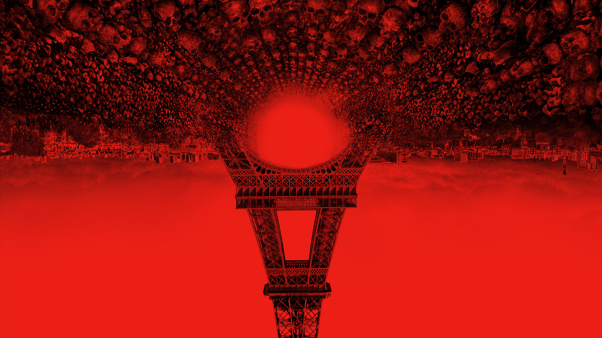
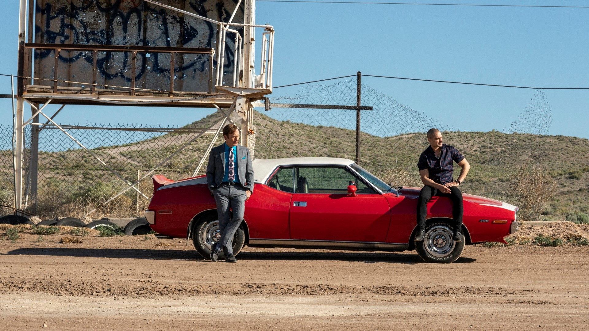
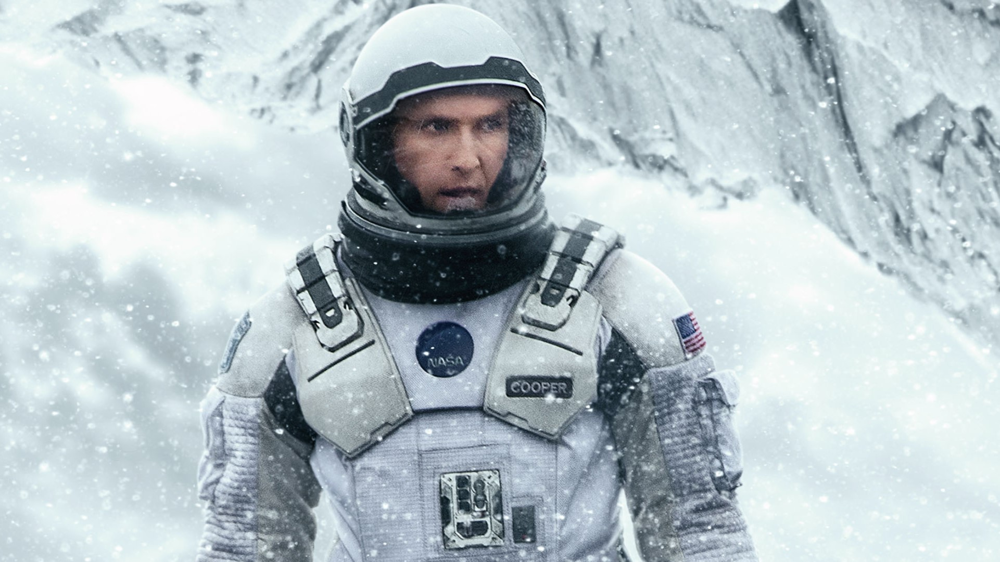
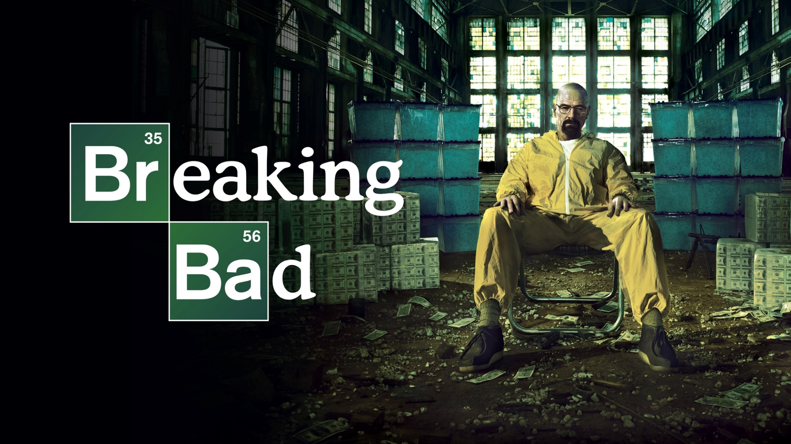
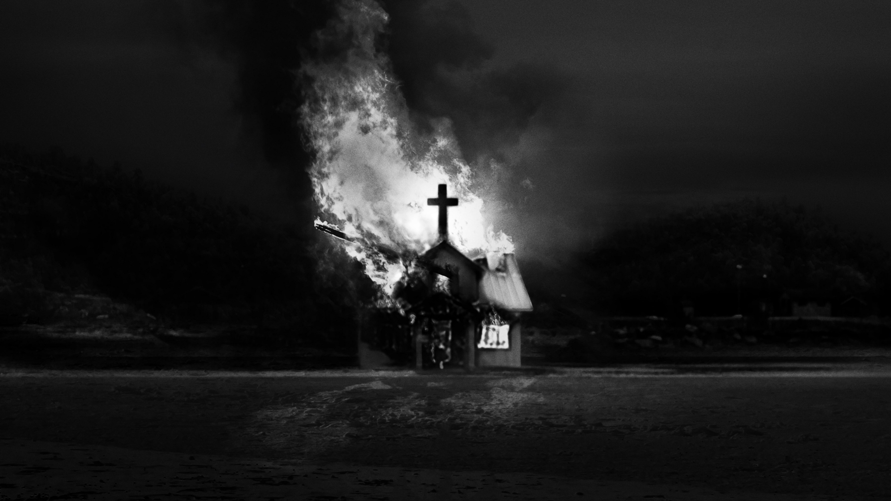

As Above So Below
As Above, So Below adalah sebuah film horor Amerika Serikat tahun 2014yang ditulis dan disutradarai oleh John Erick Dowdle dan ditulis oleh saudaranya Drew. Film tersebut diproduksi oleh Legendary Pictures dan didistribusikan oleh Universal Pictures. Film tersebut dirilis pada 29 Agustus 2014, dan menampilkan Perdita Weeks, Ben Feldman, Edwin Hodge, François Civil, Marion Lambert, dan Ali Marhyar.
Watch The Trailer

Better Call Saul
Better Call Saul adalah seri drama televisi Amerika Serikat yang dibuat oleh Vince Gilligan dan Peter Gould. Seri ini merupakan sempalan sekaligus prekuel dari Breaking Bad yang juga dibuat oleh Gilligan. Berlatar tahun 2002, Better Call Saul berkisah tentang seorang pengacara bernama James "Jimmy" McGill (Bob Odenkirk) enam tahun sebelum tampil di Breaking Bad; seri ini juga menjelajahi peristiwa selama dan sesudah era Breaking Bad.
Watch The Trailer

Interstellar
Interstellar adalah film fiksi ilmiah epos tahun 2014 yang disutradarai oleh Christopher Nolan dan diproduseri oleh Emma Thomas, Christopher Nolan dan Lynda Obst. Naskah film ini ditulis oleh Jonathan Nolan dan Christopher Nolan. Film ini dibintangi Matthew McConaughey, Anne Hathaway, Jessica Chastain dan Michael Caine. Filmnya bercerita tentang sekelompok astronaut yang menuju lubang cacing dekat Saturnus untuk mencari planet baru yang mampu merumahi manusia, ditengah era distopia.
Watch The Trailer

Breaking Bad
Breaking Bad adalah serial TV Amerika bertema drama kejahatan, ditulis dan diproduksi oleh Vince Gilligan. Acara ini disiarkan AMC selama 5 musim, dari 20 Januari 2008 sampai 29 September 2013. Breaking Bad menceritakan kisah seorang guru kimia SMA bernama Walter White (Bryan Cranston) yang didiagnosa kanker paru-paru, bersama mantan muridnya Jesse Pinkman (Aaron Paul), terjun ke dunia kejahatan dengan memproduksi dan menjual kristal metamfetamin untuk menjamin masa depan keuangan keluarganya sebelum ia meninggal. Breaking Bad berlokasi dan difilmkan di Albuquerque, New Mexico.
Watch The Trailer

Lord Of Chaos
adalah sebuah film biopik yang bercerita tentang kebangkitan scene musik Norwegian Black Metal di negara tempat asalnya.
Film yang diangkat dari buku non-fiksi karya Michael Moynihan dan Didrik Søderlind ini menceritakan kisah nyata "True Norwegian Black Metal" dan para penganutnya yang punya citra buruk.
Watch The Trailer